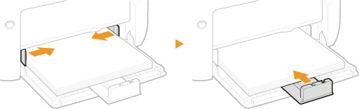

0KU8-00U
Carregue o papel frequentemente usado na multi-purpose tray. Se quiser imprimir usando um papel não carregado na multi-purpose tray, carregue o papel na abertura de alimentação manual. Carregando Papel na Abertura de Alimentação Manual
|
|
|
Sempre carregue o papel na orientação retrato
O papel não pode ser carregado na orientação paisagem. Certifique-se de carregar o papel na orientação retrato, como mostrado pela ilustração abaixo.
 |
1
Abra a bandeja multifuncional.


Ao reabastecer o papel
Quando a multi-purpose tray já está aberta e a tampa da bandeja está instalada, dobre a tampa da bandeja.

2
Separe as guias de papel.
Deslize as guias de papel para fora.

3
Carregue o papel e deslize-o até o final, até ele tocar na parte traseira.
Carregue o papel na orientação de retrato (com as bordas curtas voltadas para a máquina), com a face de impressão voltada para cima. O papel não pode ser carregado na orientação paisagem.
Antes de carregá-lo, abane bem a pilha de papel e bata-a contra uma superfície plana para alinhar as bordas.


Mantenha a pilha de papel dentro das guias de limite de carga.
Certifique-se que a pilha de papel não ultrapasse as linha de limite de carga (). Carregar muito papel pode causar encravamentos de papel.

Ao carregar envelopes ou papel pré-impresso, consulte Carregando envelopes ou Carregando papel pré-impresso.
4
Alinhe as guias de papel contra as bordas do papel.
Alinhe as guias de papel firmemente contra as bordas do papel.

Alinhe as guias de papel firmemente contra o papel
As guias de papel muito soltas ou muito presas podem causar problemas de alimentação ou encravamentos de papel.
5
Instale a tampa da bandeja.

|
|
|
Verifique se não há papel carregado na abertura de alimentação manual antes de imprimir a partir da multi-purpose tray. Se o papel estiver carregado em ambas multi-purpose tray e abertura de alimentação manual, o papel na bandeja de alimentação manual será alimentado.
|
 |
|
Ao imprimir, puxe a bandeja auxiliar com antecedência, assim o papel de saída não cai para fora da bandeja de saída.
 Após recarregar o papel que acabou durante a impressão, ou recolocar o papel após uma notificação de erro de papel, pressione a tecla (Papel) para reiniciar a impressão.
|
|
Imprimindo no verso de papel impresso (impressão frente e verso manual)
|
|
Você pode imprimir no verso do papel impresso. Aplaine quaisquer curvas no papel impresso e insira-o na bandeja multifuncional com o lado a ser impresso voltado para cima (lado já impresso voltado para baixo).
Carregue apenas uma folha de papel a cada vez que você imprimir.
Você pode usar somente papéis impressos por esta máquina.
Você não pode imprimir no lado previamente impresso.
|